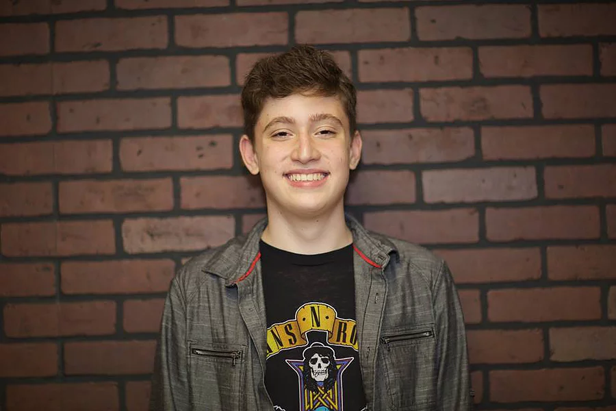

Jack Ashley-Oswalt

Equipboard
Add link
Jack Ashley-Oswaltis 16 years old and is a sophmore at East Grand Rapids High School. Jack got his first electric guitar at 11 years old and taught himself how to play! To add to his impressive musical talents, he is also an accomplished trumpeter, playing for over 3 years in the school band!
Jack enjoys all kinds of music, but he loves Heavy Metal the most. His all-time favorite bands are Metallica, Kiss, Pantera, Guns N Roses, Misfits and Black Sabbath. In his spare time, Jack loves to go to concerts and music festivals, hang out with friends and play guitar for hours a day. Jack really enjoys being part of Meltdown Cinema, where he can grow as a musician and have fun playing with a great group of friends.